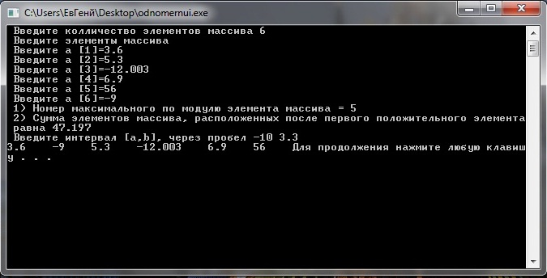
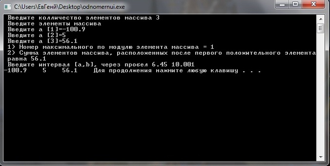
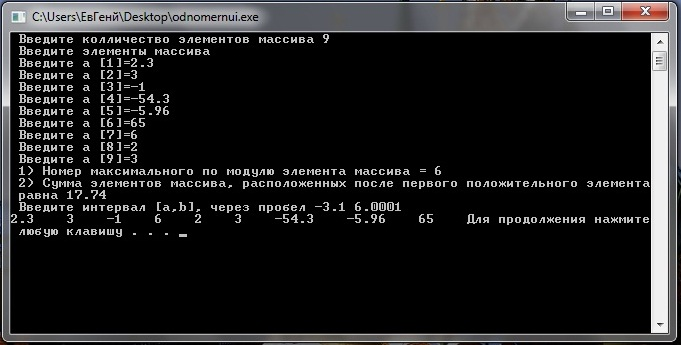
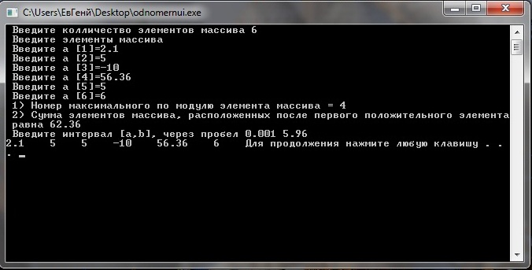
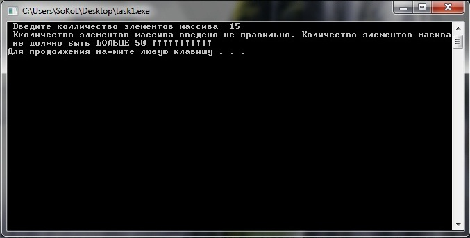

Лабораторное задание №8. Одномерные массивы.
Условие задачи
В
одномерном массиве, состоящем из n
вещественных элементов, вычислить:
1) номер
максимального по модулю элемента массива;
2) сумму
элементов массива, расположенных после первого положительного элемента.
Преобразовать
массив таким образом, чтобы сначала располагались все элементы, целая
часть которых лежит в интервале [а,b], а потом — все остальные.
Математическая модель
Для решения этой задачи объявим пятидестиэлементный
масив "z" вещественных чисел z[1], z[2] ... . Далее вводим количество
эллементов массива и проверяем это число удовлетворяет ли оно
промежутку от 1 до 50. Затем при помощи цикла вводим элементы массива.
Задание №1
Затем при помощи цикла определяем максимальный элемент масссива и определяем его номер.
Задание №2
а) При помощи цикла и двух инструкций if вычисляем
сумму чисел после первого положительного элемента массива.
Заттем на экран выводим :
1) Номер максимального по модулю элемента массива
2) Сумму элементов массива,
расположенных после первого положительного элемента
б) Вводим интервал [a,b] и проверяем эти числа на коректность ввода. При помощи циклов выводим на экран массив таким образом, чтобы сначала располагались все
элементы,
целая часть которых лежит в интервале [а,b], а потом — все остальные.
Описание алгоритма
Для решения этой задачи объявим пятидестиэлементный
масив "z" вещественных чисел z[1], z[2] ... . Далее вводим количество
эллементов массива и проверяем это число удовлетворяет ли оно
промежутку от 1 до 50. Затем при помощи цикла вводим элементы массива.
Задание №1:
Объявляем переменные maxp=z[1], в нее будем помещать максимальное положительное число, c=0 , в этой переменной будет хранится предварительный номер максимального элемента , maxo=z[1], здесь будет хранится макимальное отрицательное число, w=0, а в этой переменной будет хранится предварительный номер максимального отрицательного элемента, max=0, в нее будем помещать максимально по модулю число, nomer=0, а сюда будет помещатся номер максимального по модулю элемента.
Далее при помощи цикла for будем определять
максимальное число и его
номер. В цикле будем использовать инструкцию выбора if. В котором
определим положительный элемент массива. Затем при помоши еще одной
инструкции if определим максилальный положительный элемент массива
(maxp=z[j]) и его номер в массиве (c=j).
А в инструкции else отрицательный элемент
массива. Затем при помоши еще одной инструкции if оприделим
максимальный по модулю отрицательный элемент массива ( maxo=(-1)*z[j] )
и его номер в этом массиве ( w=j ).
Затем в том же цикле при помощи еще одной инструкции
if ( maxp>=maxo ) определим какой из двух чисел, максимального
положительного элемента массива и максималоного по модулю
отрицательного элемента массива, выберем какой из них больший и
присвоим большему элементу имя "max" , и присвоим номеру максимального элемента имя nomer.
Задание №2
При помощи цикла for вычисляем сумму чисел после первого положительного элемента массива.
В цикле используем инструкцию if (z[p]>=0)
которая определяет положительный элемент и вычисляет сумму элементов
после первого положитнльного числа ( sum+=z[p] ). Затем в теле
инструкции else при помощи еще одной инструкции if (sum!=0), где
sum - это переменная в которой накапливается значение суммы после
первого положительного элемента, где вычисляем сумму элементов (sum
+=z[p]). Это было сделано для того чтобы сумма элементов массива
прибовляла к переменной sum еще и отрицательные числа.
Выводим на экран 1) Номер максимального по модулю
элемента массива и 2) Сумма элементов массива, расположенных после
первого положительного элемента.
Основное задание:
Выводим на экран сообщение о том, что нужно ввести
интеввал [a,b]. . Затем при помощи циклов выводим на экран массив
таким образом, чтобы сначала располагались все элементы, целая часть
которых лежит в интервале [а,b], а потом — все остальные. Это будет вычислятся при помощи 2 циклов for и 2 инструкций if.
В первом цикле for (int i=1; i<=n; i++) в котором заводим переменную х и присваиваем ей округленую, в меньшую сторону, целую часть. Инструкция if
((х<=b) && (х>=a) ). Предназначеная для проверки
целой части элемента (z[i]) на принадлежность отрезку [a,b]. Если целая часть элемента входит в
промежуток то этот элемент выводится на экран. Во втором цикле for (int i=1; i<=n; i++) в котором заводим переменную х и присваиваем ей округленую, в меньшую сторону, целую часть. Инструкция if ( х>b || х<a ). Предназначеная для проверки целой части элемента (z[i]) на не принадлежность отрезку
[a,b]. Если целая часть элемента не входит в этот промежуток то элемент выводится на
экран.
Таким образом выводится массив в котором элементы
расположены: сначало выводятся элементы целая часть которой пренадлежащит промежутку, а
потом все остальные.
Текст программы с комментариями
#include <iostream>
#include <math.h>
using namespace std;
int main ()
{
int n;
double z[50]; // заводим массив
cout << " Введите колличество элементов массива: ";
cin >> n;
if (n>50 || n<1)
{
cout << " Количество элементов массива введено не правильно. Количество элементов масива не должно быть БОЛЬШЕ 50 !!!!!!!!!!! " << endl;
system ("pause");
return 1;
}
cout << " Введите элементы массива " << endl;
int i;
for (int i=1; i<=n; i++)
{
cout << " Введите a ["<< i <<"]="; // Вводим элементы массива
cin >> z[i];
}
// задание №1
int c=0, w=0;
double max=0, nomer=0, maxp=z[1], maxo=z[1];
for (int j=1; j<=n; j++) // при помощи цикла определяем максимальный элемент масссива и определяем его номер
{
if ( z[j]>=0)
{
if (maxp<=z[j])
{
maxp=z[j];
c=j;
}
}
else
{
if (maxo>=z[j])
{
maxo=(-1)*z[j];
w=j;
}
}
if (maxp>=maxo)
{
max=maxp;
nomer=c;
}
else
{
max=maxo;
nomer=w;
}
}
// Заднае №2
double sum=0;
int per=0;
for (int p=1; p<=n; p++) // при помощи цикла вычисляем сумму чисел после первого положительного элемента массива
{
if (z[p]>=0 && per>0)
{
sum+=z[p];
}
else if (z[p]>=0)
{
per++;
}
else
{
if (sum!=0)
{
sum +=z[p];
}
}
}
cout << " 1) Номер максимального по модулю элемента массива = " << nomer << endl; // выводим на экран номер максимального по модулю элемента массива
cout << " 2) Сумма элементов массива,
расположенных после первого положительного элемента равна "<< sum
<< endl; // выводим на экран сумму элементов массива,
расположенных после первого положительного элемента
// основное задание
double a=0, b=0;
cout << " Введите интервал [а,b], через пробел "; // вводим интервал [a,b]
cin >> a >> b;
// при помощи циклов выводим на экран массив таким образом, чтобы сначала располагались все
элементы,
целая часть которых лежит в интервале [а,b], а потом — все остальные.
for (int i=1; i<=n; i++) // цикл для вычисления значениия i.
{
float x=trunc(z[i]);
if ((x<=b) && (x>=a) )
{
cout << z[i] << " ";
}
}
for (int i=1; i<=n; i++) // цикл для вычисления значениия i.
{
float x=trunc(z[i]);
if ( x>b || x<a )
{
cout << z[i] << " ";
}
}
return 0;
}
Откомпилированный файл может быть получен по ссылке
Тесты и анализ результатов
Тест 1
При вводе массива состоящем из 6 элементов: 3.6, 5.3, -12.003, 6.9, 56, -9. И инетервале от -10 до 3.3.
Результат работы программы представлен на рисунке ниже

Тест 2
При вводе массива состоящем из 3 элементов: -100.9, 5, 56.1. И инетервале от 6.45 до 10.001.
Результат работы программы представлен на рисунке ниже

Тест 3
При вводе массива состоящем из 9 элементов: 2.3, 3, -1, -54.3, -5.96, 65, 6, 2, 3. И инетервале от -3.1 до 6.0001.
Результат работы программы представлен на рисунке ниже

Тест 4
При вводе массива состоящем из 6 элементов: 2.1, 5, -10, 56.36, 5, 6. И инетервале от 0.001 до 5.96.
Результат работы программы представлен на рисунке ниже

Тест 5
При вводе массива состоящем из -15 элементов.
Результат работы программы представлен на рисунке ниже
